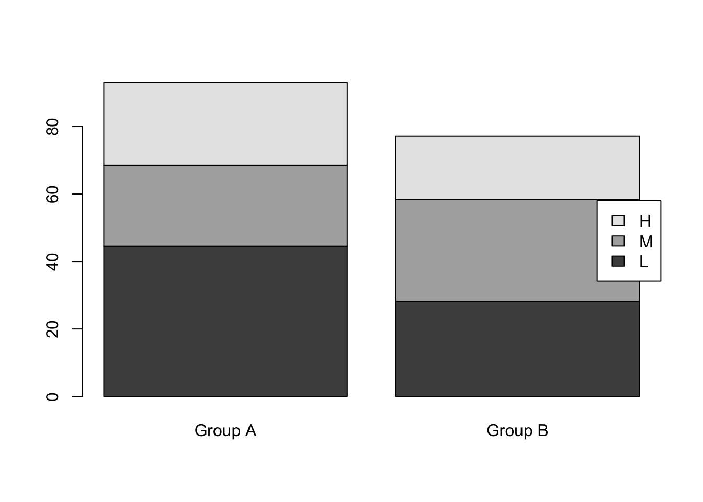
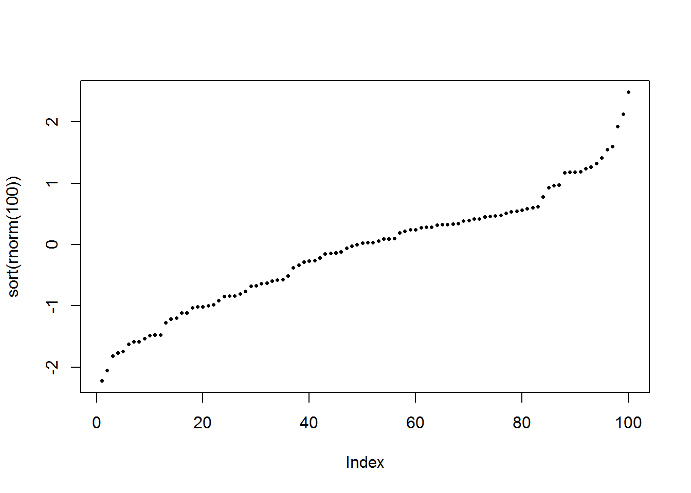
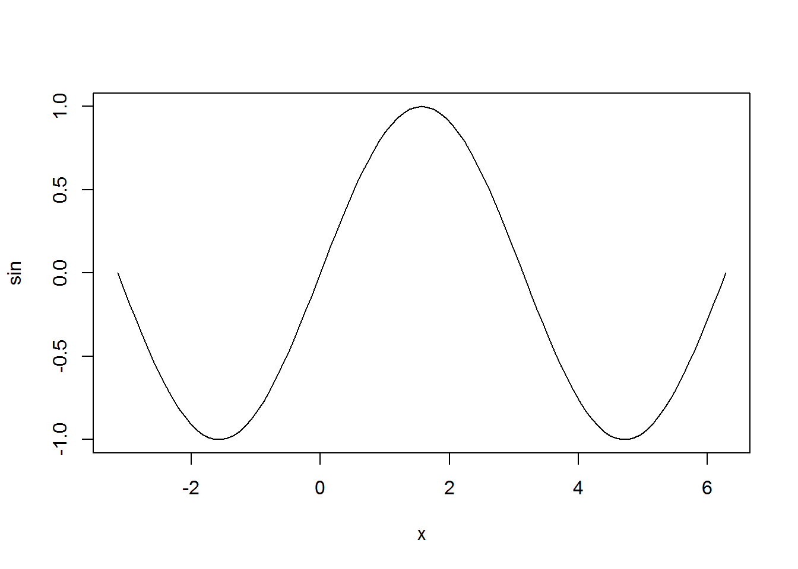
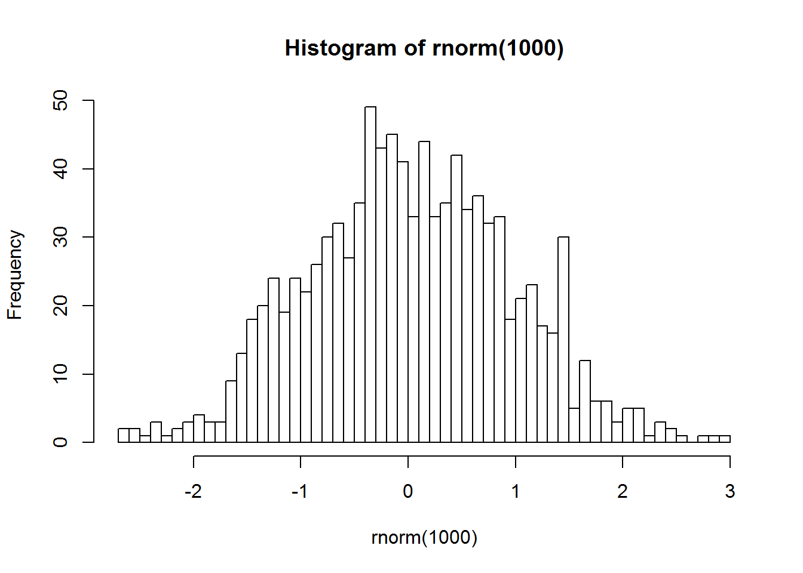
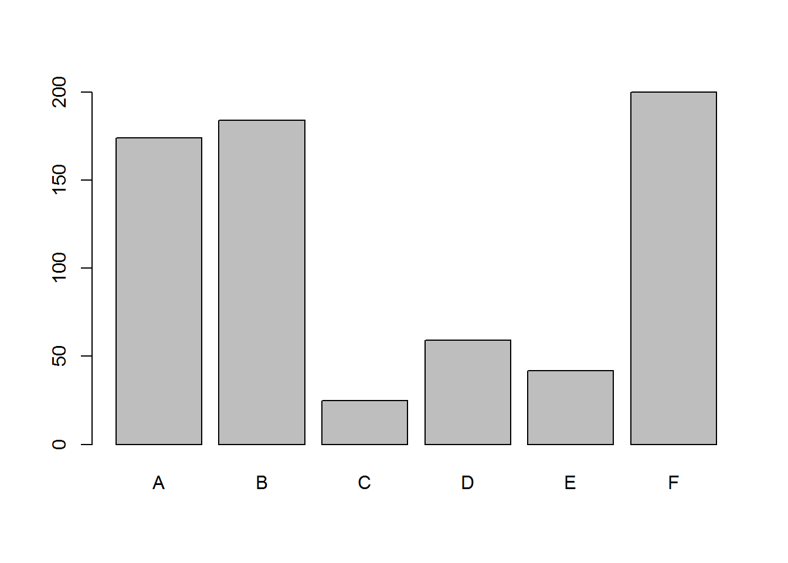
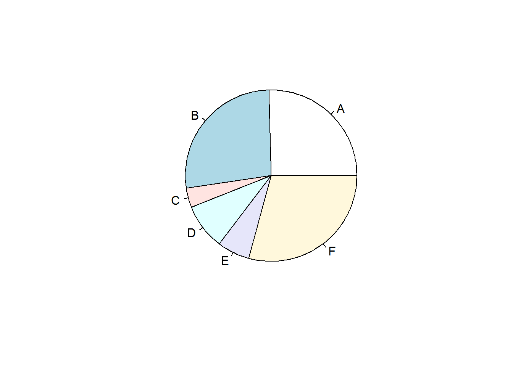
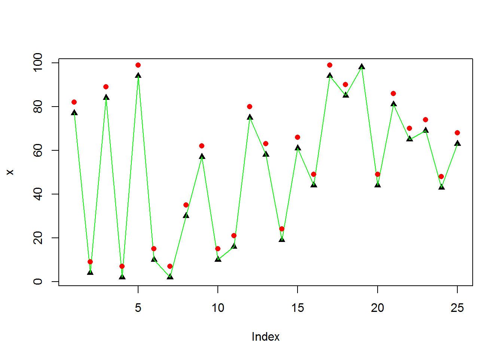
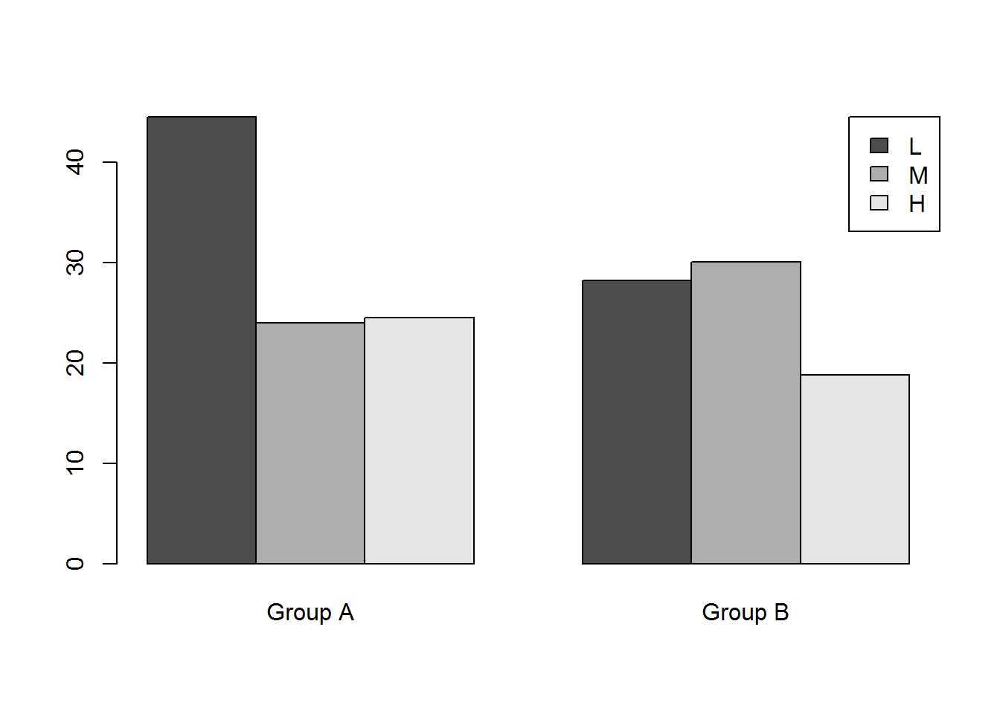

Bases de R
knitr::opts_chunk$set(echo = TRUE, message=FALSE, warning=FALSE)1 Installation des packages
Dans RStudio, il est possible d’exécuter le code ligne à ligne en faisant Ctrl+Entrée.
Dans R, il existe de nombreux packages qu’il est possible d’importer. Ainsi, on pourra utilier des données et des fonctions qui sont contenues dans ces packages.
Pour installer un package,
- sous RStudio, il est possible d’utiliser le bouton “Install” dans l’onglet “Packages”
- il est possible d’exécuter le code suivant
install.packages("nom_du_package")Ensuite, pour charger le package, il faut exécuter le code suivant:
library("nom_du_package")2 Environnement
- Créations d’objets: dans RStudio, vous pouvez voir ces objets dans la fenêtre “Environnement”
x=3.14159; y='hello world'; z=TRUE
# ou
x <- 5
5 -> x- Voir la valeur des variables dans la console
print(y)## [1] "hello world"# on peut aussi utiliser les parenthèses autour lors de la création d'objets pour les afficher les résultats
( num <- 3.14 ) ## [1] 3.14- Structure des objets ou fonctions
str(x)## num 5str(max)## function (..., na.rm = FALSE)- Quelques opérations sur les objets
ls() # lister les objets dans Environnement## [1] "num" "x" "y" "z"rm(y) # supprimer un objet
rm(list=ls()) # supprimer tous les objets- Répertoire de travail
# getwd() # afficher le répertoire de travail actuel
# setwd("/Users/robinedwards/Documents") # définir un répertoire de travail
print ( "R ignores the 'white-space' in command syntax" ) ## [1] "R ignores the 'white-space' in command syntax"- Aide sur les fonctions ou code R
# help(fonction à préciser)
# par exemple:
# help(max)
# ou
# ?max
# ??csv # rechercher dans toute la documentation
# library(help=utils) # aide pour un package en particulier3 Objets
Les objets les plus basiques sont présentés: vecteur, matrice, array, data.frame…
D’autres objets couramment utilisés sont: dates (lubridate), data.table (similaires au data.frame, c’est un package plus efficace et rapide pour manipuler les data.frames).
3.1 Vecteurs
- Création de vecteurs
vec <- c(2,5,8,3,7)
# pour une suite de nombre
vec <- 10:20- Indexation des éléments dans un vecteur
vec[3]## [1] 12vec[3:6]## [1] 12 13 14 15vec[ c(1,3,8) ]## [1] 10 12 17- Sélection grâce à un critère
vec > 15## [1] FALSE FALSE FALSE FALSE FALSE FALSE TRUE TRUE TRUE TRUE TRUEvec[vec > 15]## [1] 16 17 18 19 20- Vérifier si un élément est dans le vecteur
5 %in% vec## [1] FALSE12 %in% vec## [1] TRUE- Tous les éléments sont dans un vecteur sont du même type
(x = c('one', 'five', 'two', 3, 'two'))## [1] "one" "five" "two" "3" "two"- Trouver un élément dans le vecteur (le premier)
match('two', x)## [1] 3match(c('two','five'), x)## [1] 3 2- Ordonner un vecteur
vec <- c(10,6,2,4,10,2,8,7,1,6)
sort(vec)## [1] 1 2 2 4 6 6 7 8 10 103.2 Matrices
Les matrices sont des vecteurs à 2 dimensions.
- Création d’une matrice
matrx = matrix(1:15, 3, 5)
# ou
matrx <- 1:12
dim(matrx) <- c(3,4)
matrx## [,1] [,2] [,3] [,4]
## [1,] 1 4 7 10
## [2,] 2 5 8 11
## [3,] 3 6 9 12- Tranposée de matrice
t(matrx) # a matrix can be easily transposed## [,1] [,2] [,3]
## [1,] 1 2 3
## [2,] 4 5 6
## [3,] 7 8 9
## [4,] 10 11 12- Matrice de chaînes de charatères (tous les éléments dans une matrice sont du même type)
(matrx = matrix(c(1:14,"15e element"), 3, 5))## [,1] [,2] [,3] [,4] [,5]
## [1,] "1" "4" "7" "10" "13"
## [2,] "2" "5" "8" "11" "14"
## [3,] "3" "6" "9" "12" "15e element"3.3 Array
Un objet array est un vecteur à n dimensions.
- Création d’un array
( arry <- array(1:24, dim=c(4,3,2)) )## , , 1
##
## [,1] [,2] [,3]
## [1,] 1 5 9
## [2,] 2 6 10
## [3,] 3 7 11
## [4,] 4 8 12
##
## , , 2
##
## [,1] [,2] [,3]
## [1,] 13 17 21
## [2,] 14 18 22
## [3,] 15 19 23
## [4,] 16 20 24- Sélection d’un ou plusieurs éléments
arry[12] # un seul nombre permet de sélection le nième élément dans l'ordre## [1] 12arry[3,1,2] # plusieurs nombres permettent sélection les éléments selon les dimensions## [1] 15arry[,,2]## [,1] [,2] [,3]
## [1,] 13 17 21
## [2,] 14 18 22
## [3,] 15 19 23
## [4,] 16 20 24arry[,1,]## [,1] [,2]
## [1,] 1 13
## [2,] 2 14
## [3,] 3 15
## [4,] 4 163.4 Data.frame
Un data.frame est comme une matrice, mais permet de stocker des données de différents types dans ses différentes colonnes.
- Création d’un data.frame
df <- data.frame(name = c('Matt','Kate','Jacquie','Simon','Nita'),
age = c(35,29,32,35,39))- Structure d’un data.frame
str(df)## 'data.frame': 5 obs. of 2 variables:
## $ name: Factor w/ 5 levels "Jacquie","Kate",..: 3 2 1 5 4
## $ age : num 35 29 32 35 39- Sélection des éléments
df[1,]## name age
## 1 Matt 35df[2:3,]## name age
## 2 Kate 29
## 3 Jacquie 32df[,1]## [1] Matt Kate Jacquie Simon Nita
## Levels: Jacquie Kate Matt Nita Simondf[2,1]## [1] Kate
## Levels: Jacquie Kate Matt Nita Simon- les noms de lignes et de colonnes
dimnames(df)## [[1]]
## [1] "1" "2" "3" "4" "5"
##
## [[2]]
## [1] "name" "age"colnames(df)## [1] "name" "age"names(df) ## [1] "name" "age"row.names(df)## [1] "1" "2" "3" "4" "5"- Sélection de variables
df$name## [1] Matt Kate Jacquie Simon Nita
## Levels: Jacquie Kate Matt Nita Simondf$name[2]## [1] Kate
## Levels: Jacquie Kate Matt Nita Simon- Renommer les variables
names(df) <- c('person','years')
row.names(df) <- c('R1','R2','R3','R4','R5')- Informations sur les dimensions
length(vec)## [1] 10dim(df)## [1] 5 2dim(arry)## [1] 4 3 2nrow(df)## [1] 5ncol(df)## [1] 2- Ordonner un data.frame selon une variable
df[order(df$years),]## person years
## R2 Kate 29
## R3 Jacquie 32
## R1 Matt 35
## R4 Simon 35
## R5 Nita 393.5 Listes
Une liste permet de stocker des données de différentes natures.
- Création d’une liste vide
lst = list()- Remplir des éléments dans une liste
lst[1] = "one"
lst[[2]] <- "two"
lst[length(lst)+1] <- "three"
print(lst)## [[1]]
## [1] "one"
##
## [[2]]
## [1] "two"
##
## [[3]]
## [1] "three"- Sélectionner des éléments dans une liste
lst[[1]] # premier élément de la liste, la sortie n'est plus une liste## [1] "one"lst[1] # premeir élément de la liste, la sortie est une liste## [[1]]
## [1] "one"lst[2:3]## [[1]]
## [1] "two"
##
## [[2]]
## [1] "three"lst[c(1,3)] ## [[1]]
## [1] "one"
##
## [[2]]
## [1] "three"- Supprimer des éléments dans une liste
lst[[3]] <- NULL
lst[1:2] <- NULL
lst## list()- Types d’éléments dans une liste: les éléments d’une liste peuvent être de n’importe quel type
lst[[1]] <- list('subitem1', 2, 3)
lst[[2]] <- 'item2'
lst## [[1]]
## [[1]][[1]]
## [1] "subitem1"
##
## [[1]][[2]]
## [1] 2
##
## [[1]][[3]]
## [1] 3
##
##
## [[2]]
## [1] "item2"lst[[1]][[1]]## [1] "subitem1"- Dictionnaire
dict <- list(mon=1, tues=2)
dict['wed'] <- 3
print(dict)## $mon
## [1] 1
##
## $tues
## [1] 2
##
## $wed
## [1] 3dict[['tues']]## [1] 2dict[c('mon','wed')]## $mon
## [1] 1
##
## $wed
## [1] 33.6 Objects logiques
- Création
(bool <- TRUE)## [1] TRUE(bool <- c(TRUE, FALSE, TRUE))## [1] TRUE FALSE TRUE- Opérations de comparaison
3==3## [1] TRUE1==2## [1] FALSE1>2## [1] FALSE1<2## [1] TRUE3.7 Facteurs
Les facteurs sont des vecteurs dont les valeurs sont définies et limitées.
- Création d’un facteur
factr <- as.factor(c(10,30,20,10,20,20,30))
str(factr)## Factor w/ 3 levels "10","20","30": 1 3 2 1 2 2 3- Valeurs possibles (“niveaux”)
levels(factr)## [1] "10" "20" "30"- Comptage des valeurs
table(factr)## factr
## 10 20 30
## 2 3 2- Conversion des facteurs en numériques
# niveau
as.numeric(factr)## [1] 1 3 2 1 2 2 3# conversion d'abord en chaînes de caracètres
as.numeric(as.character(factr))## [1] 10 30 20 10 20 20 30- Modification des facteurs
print(df)## person years
## R1 Matt 35
## R2 Kate 29
## R3 Jacquie 32
## R4 Simon 35
## R5 Nita 39# invalid
df$person[1] <- 'Matthew'
# conversion d'abord en chaînes de caractères
df$person <- as.character(df$person)
df$person[1] <- 'Matthew'
df$person <- as.factor(df$person) # coerce back to factor if necessary
levels(df$person)## [1] "Jacquie" "Kate" "Matthew" "Nita" "Simon"3.8 Valeurs manquantes
(x = 1:5)## [1] 1 2 3 4 5x[8] = 8
x[3] = NA
x## [1] 1 2 NA 4 5 NA NA 8na.omit(x)## [1] 1 2 4 5 8
## attr(,"na.action")
## [1] 3 6 7
## attr(,"class")
## [1] "omit"x[na.omit(x)]## [1] 1 2 4 5 8is.na(x)## [1] FALSE FALSE TRUE FALSE FALSE TRUE TRUE FALSEx[!is.na(x)]## [1] 1 2 4 5 83.9 Informations objets
num=3
char="3"
class(bool)## [1] "logical"class(num) # numeric is the default data type for number objects## [1] "numeric"class(as.integer(num)) # integer class exists but is not default## [1] "integer"class(char) # character class## [1] "character"class('237' ) # numbers aren't always numeric type## [1] "character"as.numeric('237') # but can be converted## [1] 237as.character(237) # and vice verse## [1] "237"# Child-objects are often of different class to parents
class(df)## [1] "data.frame"class(df[,2])## [1] "numeric"class(df[,1])## [1] "factor"4 Structures et fonctions
4.1 Opérations logiques
2 + 2 == 4 ## [1] TRUE3 <= 2 ## [1] FALSE3 >= 2 ## [1] TRUE'string' == "string"## [1] TRUE'b' >= 'a' ## [1] TRUE3 != 3 ## [1] FALSEc(4,2,6) == c(4,2,8)## [1] TRUE TRUE FALSETRUE == T ## [1] TRUETRUE & TRUE## [1] TRUETRUE | FALSE ## [1] TRUEF | F## [1] FALSE4.2 Structure if/else
x <- 4
if(x < 5){
print('x is less than 5')
} else{
print('x is not less than 5')
}## [1] "x is less than 5"if(T|F) print('single liners can dispense with curly brackets')## [1] "single liners can dispense with curly brackets"if(T&F) print('') else print("but then 'else' only works on the same line")## [1] "but then 'else' only works on the same line"4.3 Structure for
for(i in 1:5){
print(paste('number ',i))
}## [1] "number 1"
## [1] "number 2"
## [1] "number 3"
## [1] "number 4"
## [1] "number 5"4.4 Structure while
i = 10
while(i > 0){
print(paste('number ',i))
i = i - 3
}## [1] "number 10"
## [1] "number 7"
## [1] "number 4"
## [1] "number 1"4.5 Fonctions
- Création d’une fonction
multiply <- function(input1, input2){
tot <- input1 * input2
return(tot)
}- Exécution d’une fonction
multiply(3,5)## [1] 154.6 Fonctions mathématiques
seq(-2, 2, by=.2) # sequence of equal difference## [1] -2.0 -1.8 -1.6 -1.4 -1.2 -1.0 -0.8 -0.6 -0.4 -0.2 0.0 0.2 0.4 0.6
## [15] 0.8 1.0 1.2 1.4 1.6 1.8 2.0seq(length=10, from=-5, by=.2) # with range defined by vector length## [1] -5.0 -4.8 -4.6 -4.4 -4.2 -4.0 -3.8 -3.6 -3.4 -3.2rnorm(20, mean = 0, sd = 1) # random normal distribution## [1] 2.90752881 -0.06150346 0.59750787 0.53796020 0.02342910
## [6] 1.27719012 -0.70744783 -0.68576383 -0.60928258 -0.54205130
## [11] -0.78362073 1.80793371 0.37868251 0.75887361 -0.04152751
## [16] -0.05094133 1.90204172 -0.07704529 -0.59175859 -0.02232134runif(20, min=0, max=100) # array of random numbers## [1] 51.880441 46.737522 41.558818 85.679704 94.140834 37.472801 99.323605
## [8] 68.909756 45.615026 7.048684 86.735336 38.089206 16.719666 5.763398
## [15] 20.080022 81.099785 19.033216 68.315382 12.076278 61.455992sample(0:100, 20, replace=TRUE) # array of random integers## [1] 63 4 24 54 71 72 98 88 73 62 65 64 48 58 45 28 58 40 16 76table(warpbreaks[,2:3]) # array summary stats (powerful summary tool)## tension
## wool L M H
## A 9 9 9
## B 9 9 9min(vec)## [1] 1max(vec)## [1] 10range(vec)## [1] 1 10mean(vec)## [1] 5.6median(vec)## [1] 6sum(vec)## [1] 56prod(vec)## [1] 3225600abs(-5) # magnitude## [1] 5sd(rnorm(10)) # standard deviation## [1] 1.0967614^2 # square## [1] 16sqrt(16) # square root## [1] 45%%3 # modulo (remainder after subtraction of any multiple)## [1] 26%%2 ## [1] 0for(i in 1:100) if(i%%20==0) print(i) # useful for running an operation every n'th cycle## [1] 20
## [1] 40
## [1] 60
## [1] 80
## [1] 1005 Import et export
# df <- read.csv('example.csv')
# write.csv(df, 'example.csv')6 Exploration des données
6.1 Examiner des données
- Examiner les premières ou dernières lignes
head(InsectSprays)## count spray
## 1 10 A
## 2 7 A
## 3 20 A
## 4 14 A
## 5 14 A
## 6 12 Atail(InsectSprays, n=3)## count spray
## 70 26 F
## 71 24 F
## 72 13 F- Résumé statistique
summary(InsectSprays)## count spray
## Min. : 0.00 A:12
## 1st Qu.: 3.00 B:12
## Median : 7.00 C:12
## Mean : 9.50 D:12
## 3rd Qu.:14.25 E:12
## Max. :26.00 F:12- Fonction
aggregate
aggregate(InsectSprays$count, by=list(InsectSprays$spray), FUN=mean)## Group.1 x
## 1 A 14.500000
## 2 B 15.333333
## 3 C 2.083333
## 4 D 4.916667
## 5 E 3.500000
## 6 F 16.666667sumInsects <- aggregate(InsectSprays$count, by=list(InsectSprays$spray), FUN=sum)
names(sumInsects) <- c('group', 'sum')
print(sumInsects)## group sum
## 1 A 174
## 2 B 184
## 3 C 25
## 4 D 59
## 5 E 42
## 6 F 200- Sous-ensembles avec critères
warpbreaks[warpbreaks$wool=='A',]## breaks wool tension
## 1 26 A L
## 2 30 A L
## 3 54 A L
## 4 25 A L
## 5 70 A L
## 6 52 A L
## 7 51 A L
## 8 26 A L
## 9 67 A L
## 10 18 A M
## 11 21 A M
## 12 29 A M
## 13 17 A M
## 14 12 A M
## 15 18 A M
## 16 35 A M
## 17 30 A M
## 18 36 A M
## 19 36 A H
## 20 21 A H
## 21 24 A H
## 22 18 A H
## 23 10 A H
## 24 43 A H
## 25 28 A H
## 26 15 A H
## 27 26 A Hwarpbreaks[warpbreaks$tension %in% c('L','M'),]## breaks wool tension
## 1 26 A L
## 2 30 A L
## 3 54 A L
## 4 25 A L
## 5 70 A L
## 6 52 A L
## 7 51 A L
## 8 26 A L
## 9 67 A L
## 10 18 A M
## 11 21 A M
## 12 29 A M
## 13 17 A M
## 14 12 A M
## 15 18 A M
## 16 35 A M
## 17 30 A M
## 18 36 A M
## 28 27 B L
## 29 14 B L
## 30 29 B L
## 31 19 B L
## 32 29 B L
## 33 31 B L
## 34 41 B L
## 35 20 B L
## 36 44 B L
## 37 42 B M
## 38 26 B M
## 39 19 B M
## 40 16 B M
## 41 39 B M
## 42 28 B M
## 43 21 B M
## 44 39 B M
## 45 29 B M- Concaténer des lignes d’observations
(newrow <- data.frame(breaks=42, wool='B', tension='M'))## breaks wool tension
## 1 42 B M(warpbreaks <- rbind(warpbreaks, newrow))## breaks wool tension
## 1 26 A L
## 2 30 A L
## 3 54 A L
## 4 25 A L
## 5 70 A L
## 6 52 A L
## 7 51 A L
## 8 26 A L
## 9 67 A L
## 10 18 A M
## 11 21 A M
## 12 29 A M
## 13 17 A M
## 14 12 A M
## 15 18 A M
## 16 35 A M
## 17 30 A M
## 18 36 A M
## 19 36 A H
## 20 21 A H
## 21 24 A H
## 22 18 A H
## 23 10 A H
## 24 43 A H
## 25 28 A H
## 26 15 A H
## 27 26 A H
## 28 27 B L
## 29 14 B L
## 30 29 B L
## 31 19 B L
## 32 29 B L
## 33 31 B L
## 34 41 B L
## 35 20 B L
## 36 44 B L
## 37 42 B M
## 38 26 B M
## 39 19 B M
## 40 16 B M
## 41 39 B M
## 42 28 B M
## 43 21 B M
## 44 39 B M
## 45 29 B M
## 46 20 B H
## 47 21 B H
## 48 24 B H
## 49 17 B H
## 50 13 B H
## 51 15 B H
## 52 15 B H
## 53 16 B H
## 54 28 B H
## 55 42 B M6.2 Valeurs manquantes
sapply(airquality, function(x) sum(is.na(x)))## Ozone Solar.R Wind Temp Month Day
## 37 7 0 0 0 0library(Hmisc)
describe(airquality)## airquality
##
## 6 Variables 153 Observations
## ---------------------------------------------------------------------------
## Ozone
## n missing distinct Info Mean Gmd .05 .10
## 116 37 67 0.999 42.13 35.28 7.75 11.00
## .25 .50 .75 .90 .95
## 18.00 31.50 63.25 87.00 108.50
##
## lowest : 1 4 6 7 8, highest: 115 118 122 135 168
## ---------------------------------------------------------------------------
## Solar.R
## n missing distinct Info Mean Gmd .05 .10
## 146 7 117 1 185.9 102.7 24.25 47.50
## .25 .50 .75 .90 .95
## 115.75 205.00 258.75 288.50 311.50
##
## lowest : 7 8 13 14 19, highest: 320 322 323 332 334
## ---------------------------------------------------------------------------
## Wind
## n missing distinct Info Mean Gmd .05 .10
## 153 0 31 0.997 9.958 3.964 4.60 5.82
## .25 .50 .75 .90 .95
## 7.40 9.70 11.50 14.90 15.50
##
## lowest : 1.7 2.3 2.8 3.4 4.0, highest: 16.1 16.6 18.4 20.1 20.7
## ---------------------------------------------------------------------------
## Temp
## n missing distinct Info Mean Gmd .05 .10
## 153 0 40 0.999 77.88 10.74 60.2 64.2
## .25 .50 .75 .90 .95
## 72.0 79.0 85.0 90.0 92.0
##
## lowest : 56 57 58 59 61, highest: 92 93 94 96 97
## ---------------------------------------------------------------------------
## Month
## n missing distinct Info Mean Gmd
## 153 0 5 0.96 6.993 1.608
##
## Value 5 6 7 8 9
## Frequency 31 30 31 31 30
## Proportion 0.203 0.196 0.203 0.203 0.196
## ---------------------------------------------------------------------------
## Day
## n missing distinct Info Mean Gmd .05 .10
## 153 0 31 0.999 15.8 10.26 2.0 4.0
## .25 .50 .75 .90 .95
## 8.0 16.0 23.0 28.0 29.4
##
## lowest : 1 2 3 4 5, highest: 27 28 29 30 31
## ---------------------------------------------------------------------------6.3 Graphique
- Graphique simple
plot(1:10)
plot(sort(rnorm(100)), pch=16, cex=0.5) # specifying point and size respectively
plot(x=1:25, y=25:1, pch=1:25) # x & y inputs, and showing the available point symbols
plot(sin, -pi, 2*pi)
hist(rnorm(1000), breaks=50)
barplot(sumInsects$sum, names.arg = sumInsects$group)
pie(sumInsects$sum, labels = sumInsects$group) - Rajouter des éléments dans un graphique
x <- sample(0:100, 25, replace=TRUE)
plot(x, pch=17)
lines(x, col='#00FF00')
points(x+5, pch=16, col='red') - Barplot
sumWB <- aggregate(warpbreaks$breaks, by=list(warpbreaks$wool, warpbreaks$tension), FUN=mean)
names(sumWB) <- c('wool','tension','mean_breaks')
(data <- cbind(sumWB$mean_breaks[c(1,3,5)], sumWB$mean_breaks[c(2,4,6)]))## [,1] [,2]
## [1,] 44.55556 28.22222
## [2,] 24.00000 30.10000
## [3,] 24.55556 18.77778barplot(data, names.arg=c('Group A','Group B'),
legend.text=c('L','M','H'), args.legend = list(x = "right"))barplot(data, names.arg=c('Group A','Group B'), beside=T,
legend.text=c('L','M','H'), args.legend = list(x = "topright")) - Utilisation de symboles
(cities <- data.frame(city=c('London','Bristol','Manchester','Leeds'),
lon=c(-0.1,-2.6,-2.2,-1.5), lat=c(51.5,51.4,53.5,53.8), pop=c(8,1,2.7,0.8)))## city lon lat pop
## 1 London -0.1 51.5 8.0
## 2 Bristol -2.6 51.4 1.0
## 3 Manchester -2.2 53.5 2.7
## 4 Leeds -1.5 53.8 0.8symbols(x=cities$lon, y=cities$lat, circles=sqrt(cities$pop), inches=0.3,
bg='red', fg=NULL, asp=T, xlab='Longitude', ylab='Latitude')
abline(h=(seq(51,53,1)), col="lightgray", lty=1)
abline(v=(seq(-4,1,1)), col="lightgray", lty=1)
text(x=cities$lon, y=cities$lat+0.2, labels=cities$city)
7 Utilisation de rmd
Rmarkdown permet de stocker le code R avec une structure de rapport.
Quelques remarques pratiques:
- Sauvegarder le code d’installations de packages dans un chunk avec
eval=FALSE - Regrouper le chargement de library dans un chunk au début du code
- Ne pas afficher des messages ou warnings en précisant:
message=FALSEouwarning=FALSE
8 Références
De nombreux codes et les commentaires ont été créés par:
## A CRASH COURSE IN [R] PROGRAMMING
## Robin Edwards (geotheory.co.uk), March 2013Certains codes viennent du site sthda.
Copyright © 2016 Blog de Kezhan Shi